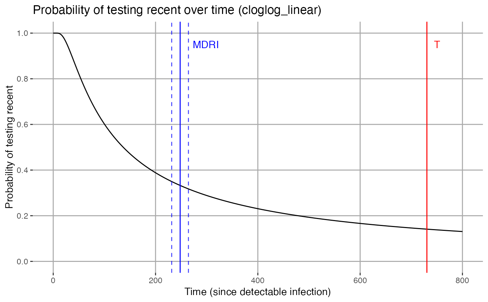

Estimates MDRI (point estimate and confidence interval) using binomial regression and a maximum likelihood approach
mdrical( data = NULL, subid_var = NULL, time_var = NULL, functional_forms = c("cloglog_linear", "logit_cubic"), recency_cutoff_time = 730.5, inclusion_time_threshold = 800, recency_rule = "binary_data", recency_vars = NULL, recency_params = NULL, n_bootstraps = 10000, random_seed = NULL, alpha = 0.05, plot = TRUE, parallel = ifelse(n_bootstraps == 0, FALSE, TRUE), cores = parallel::detectCores(), output_bs_parms = FALSE, debug = FALSE )
| data | A data frame containing variables for subject identifier, time (since detectable infection), and variables with biomarker readings or recency status (to be specified in recency_vars) |
|---|---|
| subid_var | The variable in the dataframe identifying subjects |
| time_var | The variable in the dataframe indicating time between 'time zero' (usually detectable infection) and biomarker measurement |
| functional_forms | Select functional form/link function combinations for fitting probability of testing recent as a function of time to data using binomial regression (see Details). Default=all supported functional forms. |
| recency_cutoff_time | Recency time cut-off ('Big T'). Default = 730.5. |
| inclusion_time_threshold | Data points beyond this time are excluded from the calculation (in same unit as recency_cutoff_time, default = 800). |
| recency_rule | Specified rule for defining recent/non-recent outcomes from biomarker data (see Details) |
| recency_vars | Variables to be used in determining recency outcomes |
| recency_params | Vector of numeric parameters (e.g. thresholds) for determining recency according to the relevant rule |
| n_bootstraps | Number of subject-level bootstrap resampling operations for estimating confidence intervals, default = 10000. |
| random_seed | Pass a random seed for reproducible bootstrapping. Default is NULL. |
| alpha | Confidence level, default=0.05. |
| plot | Specifies whether a plot of the probability of testing recent over time should be produced |
| parallel | Set to TRUE in order to perform bootstrapping in parallel on a multicore or multiprocessor system. |
| cores | Set number of cores for parallel processing when parallel=TRUE. This defaults to four. |
| output_bs_parms | Return a matrix of the fitting parameters for each bootstrap iteration. |
| debug | Enable debugging mode (browser) |
MDRI Dataframe containing MDRI point estimates, CI lower and upper bounds and standard deviation of point estimates produced during bootstrapping. One row per functional form.
Plots A plot of Probability of testing recent over time for each functional form.
Models The fitted GLM models for each functional form.
The package contains long form documentation in the form of vignettes that cover the use of the main fucntions. Use browseVignettes(package="inctools") to access them.
Expected data frame format: Before calling the function, please import your dataset into R environment.
time_var: Time since infection; Note: this package does not assume any specific time unit. It is important to specify the recency time cut-off 'T' and the time-based data exclusion rule (inclusion_time_threshold) in the same unit as the input times. The estimated MDRI will be in this unit.
Method: This function fits a function for probability of testing recent as a function of time to the supplied data using binomial regression. This requires binary outcomes (recent/non-recent) coded as 1 for recent and 0 for non-recent test resutls. Either a recency status variable must be specified, or a recency rule for determinging recency status from a biomarker or set of biomarkers must be specified. Currently only independent biomarker thresholds are supported (i.e. all biomarker criteria must be met in order for a specimen to be classified as recent).
Functional forms currently supported for the binomial regression fitting procedure: cloglog_linear, logit_cubic
To be implemented in the near future: logit_spline
logit_cubic: Fits a binomial regression to probability of testing recent with a logit link on a polynomial in t of the third degree, where t is time since (detectable) infection.
cloglog_linear: Fits a binomial regression to probability of testing recent with a log log link on log(t), where t is time since (detectable) infection.
recency_rule: binary_data - supply a binary variable with 1=recent and 0=non-recent in recency_vars.
recency_rule:independent_thresholds: supply one threshold variable per biomarker in recency_vars and the relevant thresholds, as well as whether a value below or above each threshold indicates recency in recency_params.
recency_params expects a list of pairs of thresholds and thresholdtypes, with zero indicating a reading below the threshold implies recency and 1 that a reading above the threshold implies recency. (Note: two values, a threshold and a thresholdtype per variable must be specified in recency_params. For example, if you specify recency_vars = c('ODn','ViralLoad') you may specify recency_params = c(1.5,0,500,1), meaning that an ODn reading below 1.5 AND a viral load reasing above 500 indicates a recent result. Objects with missing values in its biomarker readings will be excluded from caculation.
mdrical(data=excalibdata, subid_var = "SubjectID", time_var = "DaysSinceEDDI", recency_cutoff_time = 730.5, inclusion_time_threshold = 800, functional_forms = c("cloglog_linear"), recency_rule = "binary_data", recency_vars = "Recent", n_bootstraps = 10, parallel = FALSE, alpha = 0.05, plot = TRUE)#> | | | 0% | |======== | 11% | |================ | 22% | |======================= | 33% | |=============================== | 44% | |======================================= | 56% | |=============================================== | 67% | |====================================================== | 78% | |============================================================== | 89% | |======================================================================| 100%#> $MDRI #> # A tibble: 1 x 8 #> FuncForm PE CI_LB CI_UB SE n_recent n_subjects n_observations #> <chr> <dbl> <dbl> <dbl> <dbl> <dbl> <dbl> <dbl> #> 1 cloglog_li… 248.145 231.592 264.329 10.9791 270 304 708 #> #> $Models #> $Models$cloglog_linear #> #> Call: glm2::glm2(formula = recency_status ~ 1 + I(log(time_since_eddi)), #> family = stats::binomial(link = "cloglog"), data = data, #> control = stats::glm.control(epsilon = tolerance, maxit = maxit, #> trace = FALSE)) #> #> Coefficients: #> (Intercept) I(log(time_since_eddi)) #> 4.0858 -0.9052 #> #> Degrees of Freedom: 707 Total (i.e. Null); 706 Residual #> Null Deviance: 941.2 #> Residual Deviance: 747.4 AIC: 751.4 #> #> #> $Plots #> $Plots$cloglog_linear#> #> #> $BSparms #> NULL #>